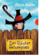

Der Rauber Hotzenplotz

Der Rauber Hotzenplotz ist ein ganz schoner Schurke, er hat Gro?mutters Kaffeemuhle gestohlen. Wachtmeister Dimpfelmoser ist erzurnt: Recht und Ordnung mussen wieder her, der Rauber Hotzenplotz muss geschnappt werden. Da haben Kasperl und Seppel eine Idee, wie sie den Rauber Hotzenplotz in eine Falle locken konnen: mit einer Kiste voll Gold! Aber so mirnichts-dirnichts lassen Rauber sich nicht fangen ... Der Klassiker von Otfried Preu?ler jetzt in einer neuen, kolorierten Ausgabe.